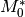
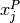
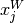

Enrichment Parameters¶
All functionality may be found in the enrichment_parameters module:
import bright.enrichment_parameters
The EnrichmentParameters Class¶
Enrichment has one major helper class, EnrichmentParameters, which aids in specifying the inputs necessary for the multi-component cascade model to run.
- class bright.enrichment_parameters.EnrichmentParameters¶
This class is a collection of values that mirror the attributes in Enrichment that are required for the cascade model to run. Like ReactorParameters, this class takes no arguments on initialization. An empty ErichmentParameters instance has all values set to zero.
- M0¶
This is the number of stripping stages initially guessed by the user.
- Mstar_0¶
The  represents a first guess at what the Mstar should be. The value of Mstar_0 on initialization should be in the ballpark of the optimized result of the Mstar attribute. However, must always have a value between the weights of the j and k key components.
- N0¶
This is the number of enriching stages initially guessed by the user.
- alpha_0¶
The
 attribute specifies the overall stage separation factor
for the cascade. This should be set on initialization. Values should be
greater than one. Values less than one represent de-enrichment.
attribute specifies the overall stage separation factor
for the cascade. This should be set on initialization. Values should be
greater than one. Values less than one represent de-enrichment.
- j¶
This is an integer in zzaaam-form that represents the jth key component. This nuclide is preferentially enriched in the product stream. For standard uranium cascades j is 922350 (ie U-235).
- k¶
This is an integer in zzaaam-form that represents the kth key component. This nuclide is preferentially enriched in the waste stream. For standard uranium cascades k is 922380 (ie U-238).
- xP_j¶
This is the target enrichment of the jth isotope in the product stream mat_prod. The  value is set by the user at initialization or run-time. For typical uranium vectors, this value is about U-235 = 0.05.
- xW_j¶
This is the target enrichment of the jth isotope in the waste stream ms_tail. The  value is set by the user at initialization or runtime. For typical uranium vectors, this value is about U-235 = 0.0025.
Enrichment Helper Functions¶
- bright.enrichment_parameters.uranium_enrichment_defaults()¶
This function returns a new EnrichmentParameters instance which holds sensible initial values a urnaium enrichment cascade.
The values of this instance of EnrichmentParameters are as follows:
ued = bright.enrichment.EnrichmentParameters() ued.alpha_0 = 1.05 ued.Mstar_0 = 236.5 ued.j = 922350 ued.k = 922380 ued.xP_j = 0.05 ued.xW_j = 0.0025 ued.N0 = 30.0 ued.M0 = 10.0